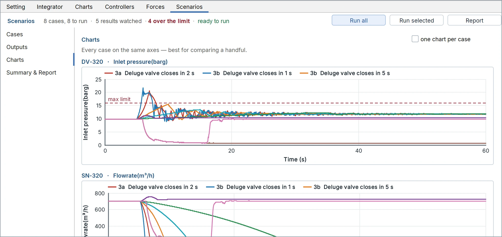
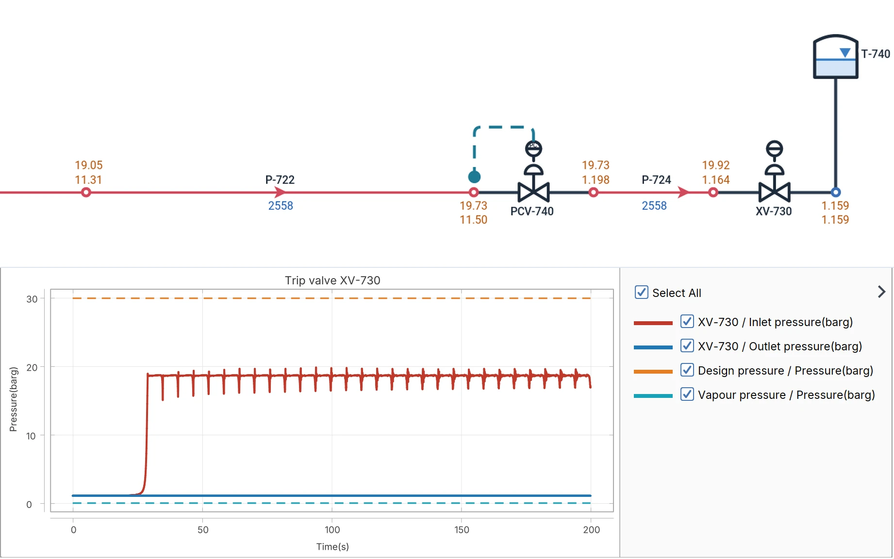
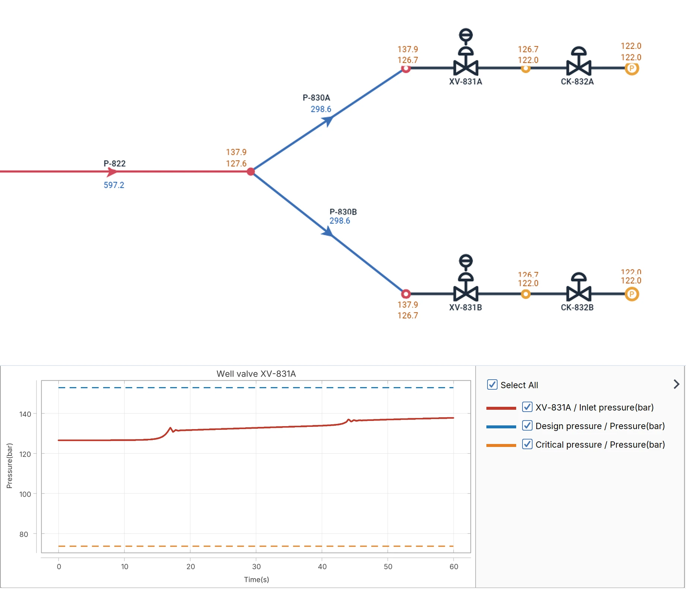
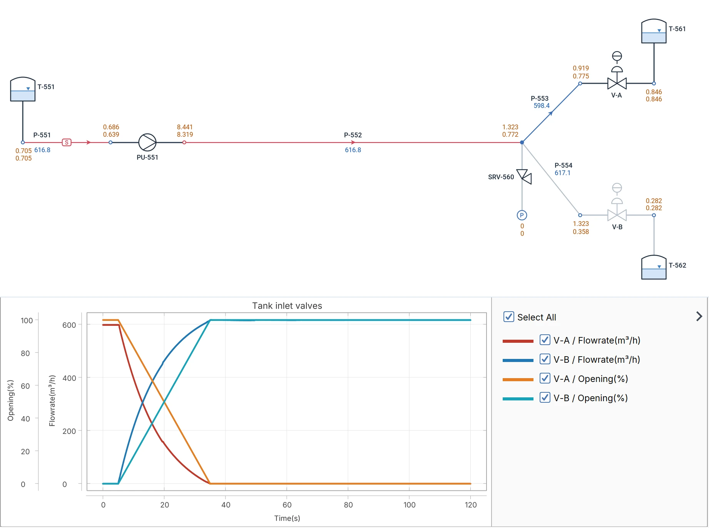

Surge and water hammer by the method of characteristics: pump trips and starts, valve closures, column separation, fire water priming and surge protection, on the same model as the Liquid mode, and every case of the study in the Scenario Manager.
Pressure waves through the whole network by the method of characteristics, with the wave speed of every pipe worked out from its material and wall.
Pump trip and start-up
Sudden power failure, run-down and restart, with the inertia of the pump and its motor, and the check valves closing behind them.
Valve closure and opening
Fast and slow strokes, emergency shutdown valves, deluge valves and control valves, each with its characteristic.
Surge protection
Air vessels, surge tanks, air valves, surge relief valves and rupture discs, sized by running them.
Cavitation
Column separation at vapour pressure, the cavity that opens and the pressure when the columns meet again.
Forces
The unbalanced forces on every pipe run through the event, for the pipe stress engineer.
Controllers and events
Trips, starts, strokes and set points in time, or driven by a pressure or a level as the plant's own controls do.
Envelopes and profiles
The highest and the lowest pressure each node saw, on the sheet and drawn along the line against its rating.
Scenario Manager
Every closing time, every protection, every pump combination as a case of the same model, run in one go.
Fire water
The priming time, and what the filling does.
A deluge system is dry behind its valve, and a caisson fire pump starts with nothing above it but air. How long until water reaches the last nozzle, and what happens when it gets there, is a transient question. Flowmax fills dry pipes with a front of water, pushes the air ahead of it out through the nozzles and the air valves, and gives the time, the pressures and the forces all the way.
Priming time
A fire pump started on a dry riser: the riser full to the cellar deck 5.1 s after the start, the water at the top deck air valve after 33.4 s, and how the air valve outlet sets that time.
Deluge filling
A deluge valve opening on a dry branch: the pipes fill one after the other, the first nozzles flow 3.6 s after the opening, the last 6.9 s.
The front arriving
Water running into an empty branch is stopped at its end: 33.9 barg at the last nozzles for an instant, and the forces on the riser and the header.
Pump start and changeover
The duty pump tripping and the diesel standby taking over: the header back to pressure 0.7 s after the start, and the force on the pump header.
Scenario Manager
Every case of the surge study, side by side.
A surge study is never one run. Set the cases once — here eight on a fire water ring main: the deluge valve closing in 1, 2 and 5 s, a monitor closing, the pump tripping — press Run all, and read every case on one chart and in one table, each result against its limit, the ones over it in red.

Every case on one chart: the pressure before the deluge valve for the eight cases, against the 16 barg limit.
Across the plant
Rundown lines, injection wells, shipping lines.
The same solver on every liquid the plant moves: a cryogenic rundown at its vapour pressure, CO2 in its dense phase above the critical point, a light hydrocarbon to the tanks.

LNG rundown
A trip valve closing at the LNG tank
Two rundown pumps send 2,558 m³/h of LNG to storage. XV-730 trips shut at the tank: the pressure before it climbs from 1.2 to about 19 barg as the line stops, with the pressure waves running back and forth, and stays under the 30 barg design pressure and above the vapour pressure all the way.

CO2 injection
Dense-phase CO2 to two injection wells
Two pumps send 597 m³/h of CO2 down a trunk line to two wells. As a well valve closes, the pressure before it rises from 127 to 138 bar in two waves: the CO2 stays far above its 74 bar critical pressure, dense, and under the 153 bar design pressure.

Gasoline line
A tank changeover on a shipping line
617 m³/h of gasoline from the pump to the tank farm. V-A closes while V-B opens over 30 seconds: the flow moves from one tank to the other without a surge, and the relief valve SRV-560 never lifts. Change the stroke times and see where it starts to.
Watch
A power failure, as Flowmax predicts it.
The model you solved in the Liquid mode is the one you trip: no second model, no data typed twice.
The transient solver is checked against the closed-form theory of hydraulic transients: see the validation.
Tutorial 2 · 2:06
Watch it in the program.
A ready model of a 20 km water line: a power failure trips both pumps, the column separates at the summit, then an air vessel, an air valve and a slower valve protect it.
Ready to analyse transient events?
Request a free trial and run your own surge study with Flowmax.